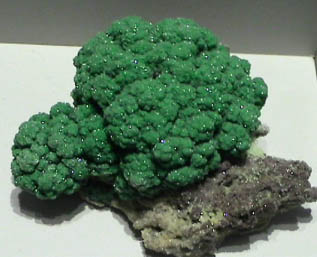
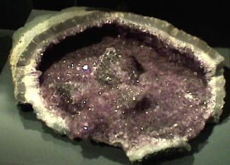
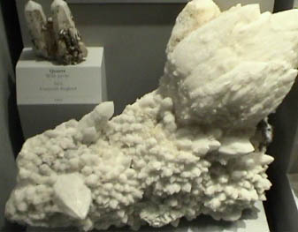
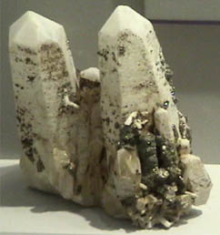

Forms of Quartz
|
Quartz is silicon dioxide, SiO2. Quartz is abundant in the Earth's crust, being the chemically simplest form of the silicates. All the samples here are displayed in the Smithsonian Museum of Natural History. This sample of green quartz with malachite is from Tsumeb, Namibia and is about 9x9 cm. |  |
|
 | This large geode-like structure has quartz crystals formed over calcite. The overall size is about 35x35 cm and the sample is from Danialo mine, Rio Grande do Sul, Brazil. |
|
This large sample from Mineral Park, Colorado is described as quartz with calcite. It is about 20x20 cm. |  |
|
 | This sample is described as quartz with pyrite. Its size is about 7x8 cm and it is from Cornwall, England. |
This sample is described as quartz after coral. The overall dimension is about 14x14 cm.
 | This sample is described as quartz from petrified wood. The sample was about 18x6 cm and was from Arizona. |
|
This is a petrified dinosaur bone according to the caption. It is about 9x11 cm and was found in Montrose County, Colorado. |  |
|
Index |